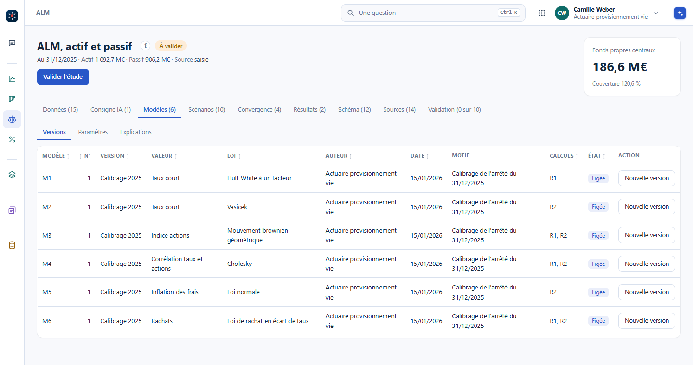
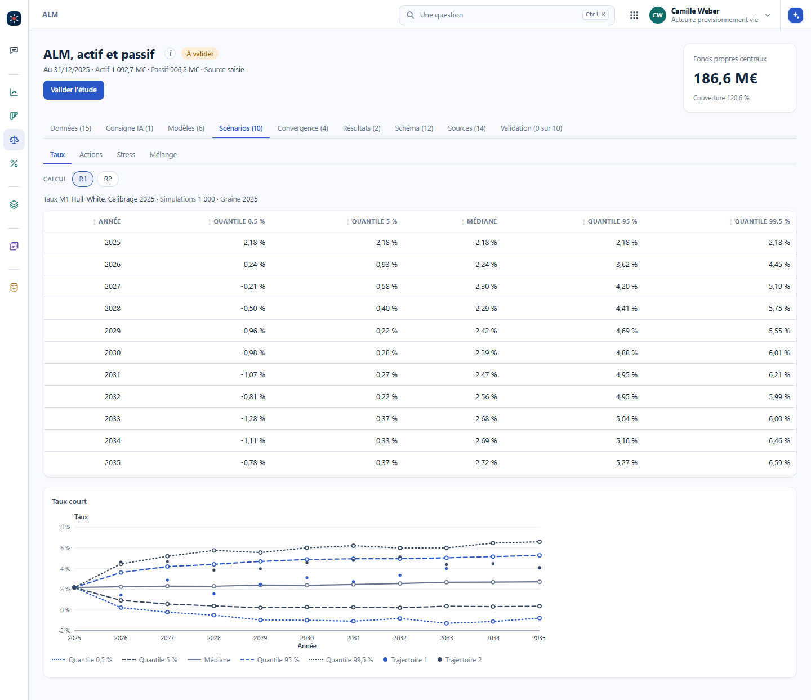
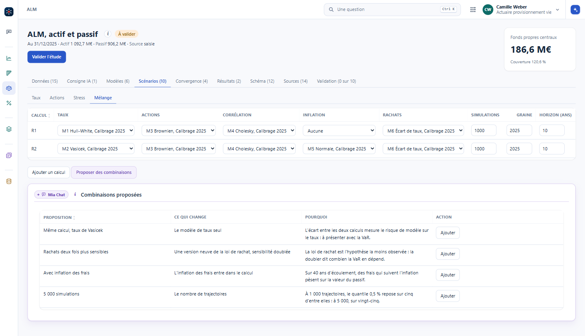
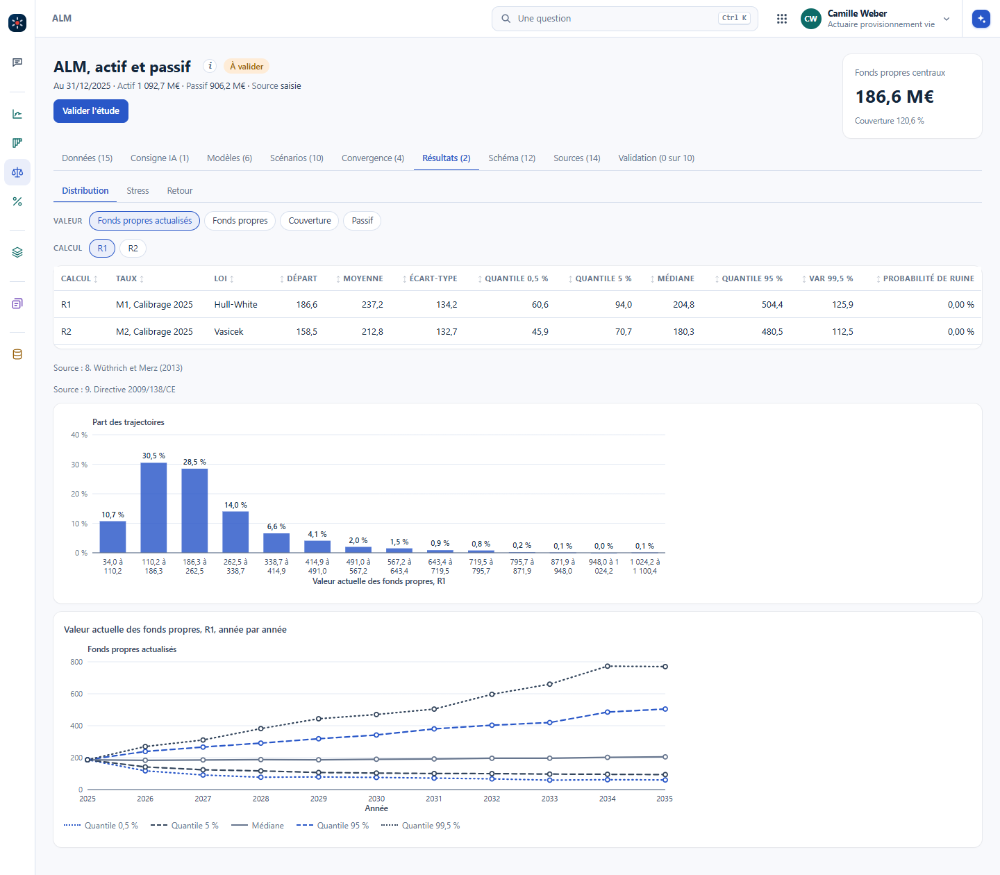
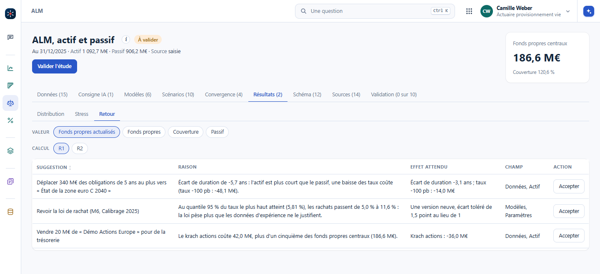

Projeter, c'est faire tourner des modèles actuariels et économiques sur le portefeuille de départ. Chaque modèle a ses versions, rangées dans une table. Chaque valeur, le taux, les actions, les rachats, a plusieurs scénarios, qu'on mélange en calculs. On regarde la distribution des valeurs suivies, puis on revient sur les paramètres de départ avec les résultats en main, sous forme de suggestions.
L'onglet Modèles est une table, une ligne par version : le numéro du modèle, sa version, la valeur qu'il pilote (le taux court, l'indice actions, la corrélation, l'inflation des frais, les rachats), la loi, l'auteur, la date, et un motif libre, comme « Calibrage de l'arrêté du 31/12/2025 ». La colonne Calculs dit quels calculs emploient la version, et une version employée est figée : la changer, c'est en créer une nouvelle, copiée de la précédente, avec son motif.

Dans Vision : #/alm?ong=modeles, puis Versions, Paramètres et Explications. Les paramètres de chaque version et les tables qui les rangent sont au chapitre Versionner les résultats.
Le générateur de scénarios tire des trajectoires pour chaque valeur : le taux court en Hull-White à un facteur, calé sur la courbe de départ, ou en Vasicek, avec sa propre courbe ; les actions en mouvement brownien géométrique ; la corrélation entre taux et actions par Cholesky ; l'inflation des frais ; des rachats qui montent quand le marché sert plus que le taux garanti. Un calcul choisit une version par valeur, un nombre de simulations, une graine et un horizon. C'est le côté stochastique, et l'IA aide à en faire beaucoup : « Proposer des combinaisons » rend des calculs à ajouter, chacun avec ce qu'il change et pourquoi.
Les modèles de ce générateur s'expliquent un par un, avec une illustration qu'on fait bouger, dans la rubrique Scénarios économiques de la bibliothèque : Vasicek pas à pas, Vasicek, CIR et Hull-White comparés, les actions, brownien ou sauts, et le générateur assemblé et son test de martingale.


Dans Vision : #/alm?ong=scenarios, puis Taux, Actions, Stress et Mélange.
L'onglet Résultats donne, pour chaque calcul, la distribution de la valeur suivie : les fonds propres actualisés, les fonds propres à l'horizon, la couverture ou la valeur du passif. Une ligne par calcul : le départ, la moyenne, l'écart-type, les quantiles, la VaR à 99,5 % et la probabilité de ruine ; puis l'histogramme et l'éventail année par année. L'onglet Stress met les stress déterministes à côté des quantiles stochastiques.
Les résultats renvoient vers le départ. L'onglet Retour propose des suggestions, chacune avec sa raison chiffrée, l'effet attendu, le champ qu'elle changerait et un bouton « Accepter ». Par exemple : l'écart de duration est de -5,7 ans, l'actif est plus court que le passif ; déplacer 340 M€ d'obligations courtes vers une obligation à 15 ans le ramène à -3,1 ans, et le coût d'une baisse des taux de 100 pb passe de 48,1 à 14,0 M€. Rien ne change avant l'accord de l'actuaire.


Dans Vision : #/alm?ong=resultats, puis Distribution, Stress et Retour.
Les calculs R1 et R2 tournent sur les mêmes données. R1 part de 186,6 M€ de fonds propres, R2 de 158,5 M€. Pourquoi deux points de départ, et que faut-il en dire ?
R1 prend Hull-White, calé sur la courbe du 31/12/2025 : il redonne le bilan des données. R2 prend Vasicek, qui a sa propre courbe et ne colle pas à celle du marché : le bilan de départ change de 28,1 M€. Cet écart est un risque de modèle. Il se montre à côté de la VaR, et c'est justement la première combinaison que propose Mia Chat.
La VaR à 99,5 % du calcul R1 vaut 125,9 M€ sur 1 000 simulations. Sur combien de trajectoires repose-t-elle ?
Sur 5 trajectoires, celles qui tombent sous le quantile 0,5 %. C'est peu : la combinaison « 5 000 simulations » en donne 25. Le chapitre Monte-Carlo montre ce que coûte la précision, et ce que plus de simulations n'achète pas.